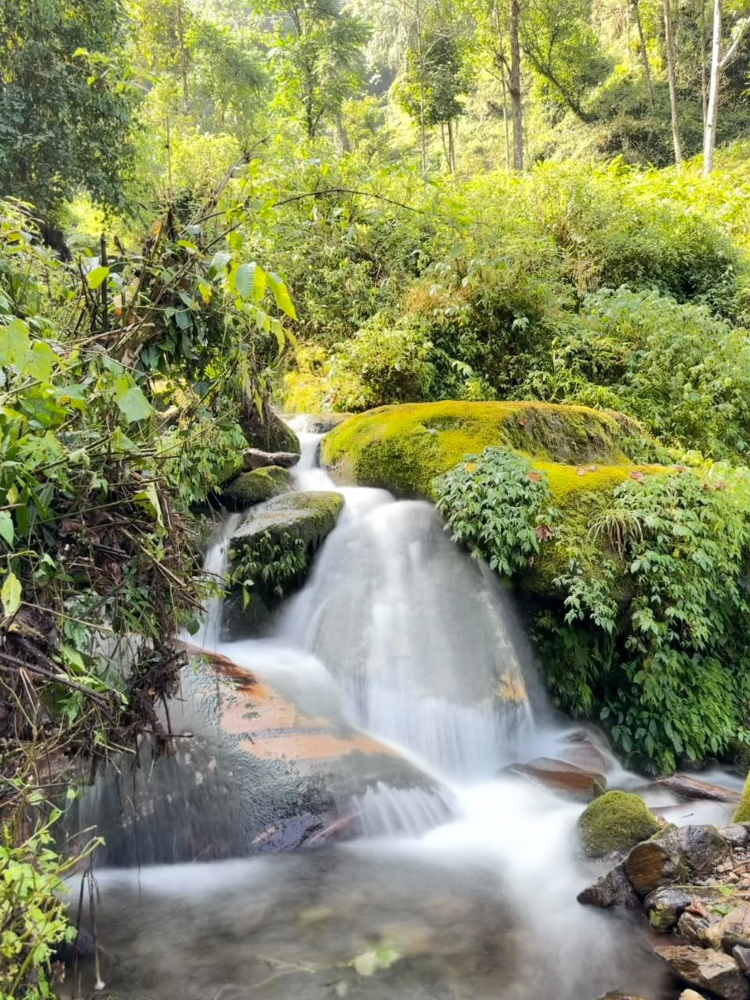

DISCOVER THE BEAUTY OF SIKKIM
A 4-day journey through nature, wellness and Sikkimese culture.
Wellness Package ↓WELCOME TO DARAP

Darap Wellness Tourism is a soulful journey into the serene landscapes and living traditions of Sikkim. Set in the peaceful village of Darap, this experience brings together mindful wellness, nature, local food and authentic community life.
From gentle walks and natural water sound therapy to herbal gardens, farm-to-table meals and Limboo cultural experiences, every moment invites you to slow down, reconnect and experience Sikkim with heart.
Discover the simple beauty of village life, connect with the local community and enjoy a refreshing break surrounded by nature.
YOUR WELLNESS JOURNEY
Every day offers a new opportunity to enjoy nature, wellness and local culture.
Your journey begins with your arrival at Bagdogra Airport, followed by a scenic transfer to Darap, a peaceful village in West Sikkim.
On reaching the village, settle into your homestay, meet your local hosts and take some time to relax. Enjoy the beautiful surroundings and get ready for the experiences ahead.
Begin your morning with a gentle walk through Darap village. Enjoy birdwatching, fresh mountain air and the soothing sounds of flowing water.
After breakfast, explore the village and its herbal gardens. Learn about local plants and traditional knowledge while enjoying the natural surroundings.
For lunch, take part in a farm-to-table experience. Visit a local farm, prepare fresh vegetables and enjoy authentic Sikkimese food.
Spend the evening discovering Limboo traditions through folk stories and traditional music. Return to your Darap homestay for an overnight stay.
Start your morning with a peaceful village walk and the soothing sounds of nature. Before breakfast at around 7:30 AM, enjoy a yoga, meditation or quiet reflection session, followed by a traditional herbal bath, depending on weather and availability.
After breakfast, set out on a hike from Darap to Rani Dhunga. Enjoy the forest trails, fresh mountain air and beautiful natural surroundings.
Return to the village for a farm visit and a freshly prepared Sikkimese lunch.
Spend the afternoon exploring the village and herbal gardens. In the evening, enjoy Limboo folk stories, traditional music and cultural performances, followed by dinner and an overnight stay at your homestay.
Enjoy your final morning in Darap with a delicious breakfast and the peaceful beauty of the village.
After breakfast, say goodbye to your hosts and begin your return journey to Bagdogra, carrying home beautiful memories of nature, culture and wellness.
DISCOVER WHAT AWAITS YOU
Enjoy peaceful walks and discover the natural beauty of Darap.
Take time to relax and enjoy the soothing sounds of flowing water.
Explore local plants and learn about traditional herbal knowledge.
Enjoy fresh farm-to-table meals and traditional Sikkimese cuisine.
PLAN YOUR WELLNESS JOURNEY
For package information and booking enquiries, please contact Darap Tourism Development Committee (DTDC).
Booking through DTDC only.
Visit our website for more details:
Tongsum Festival Website